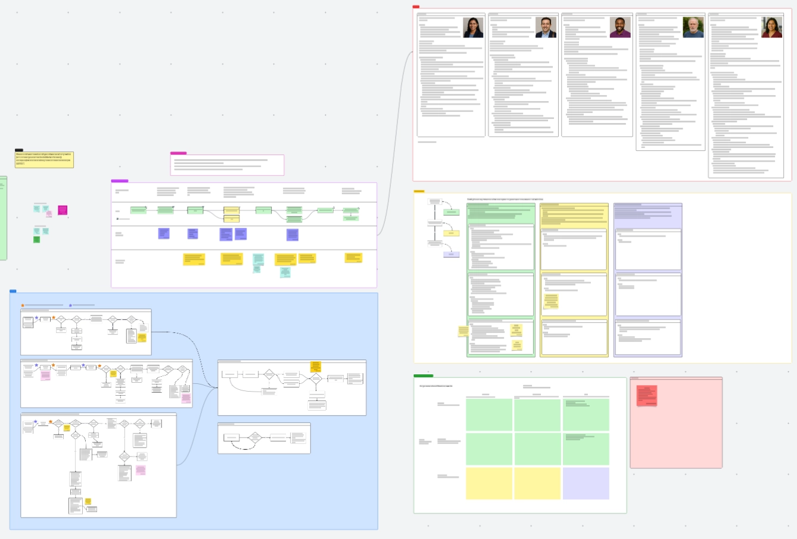

Event Capacity Microservice
Microservices platform PM, decoupling capacity and waitlisting logic from Salesforce architecture.
Role: Lead PM — waitlisting UX, GA roadmap, currently pre-GA development

The Problem
Salesforce architecture imposes constraints on event registration at scale. A standalone microservice decouples capacity and waitlisting logic, enabling scalable registration handling beyond the platform's native capabilities.
I joined a platform team developing this microservice that had shipped a v1 and was working toward GA (general availability). I brought product and UX rigor to the effort, particularly around complex waitlisting logic.
My Role
I'm leading end-to-end product strategy: researching waitlisting best practices (Nielsen Norman Group, competitive analysis), creating comprehensive UX flows with personas in Lucid, and facilitating cross-functional sessions with the dev team to design API-first architecture. I've defined clear GA requirements and a roadmap for scalable registration handling.
This case study will be published when the feature ships.